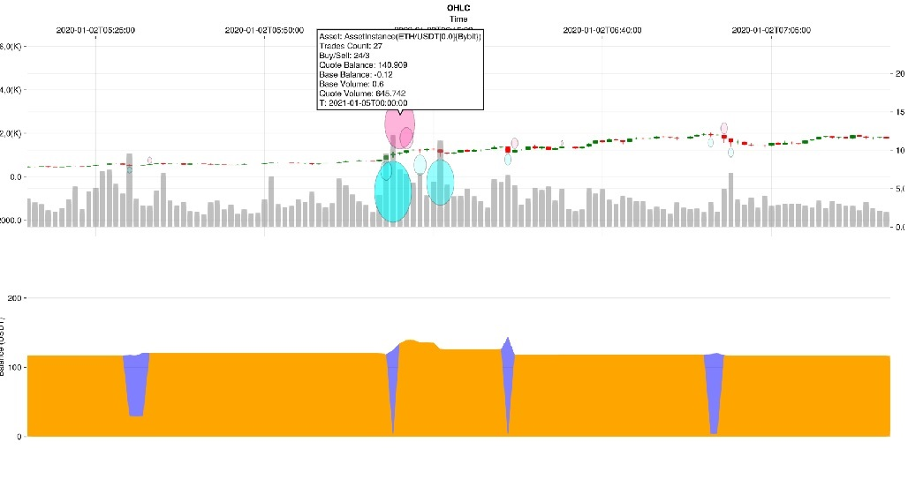

<!– category: "getting-started" difficulty: "advanced" topics: [execution-modes, margin-trading, exchanges, data-management, optimization, getting-started, strategy-development, troubleshooting, visualization, configuration] last_updated: "2025-10-04" –>
Plotting and Visualization
The Plotting module utilizes Makie for creating visualizations. It is important to note that graphical backends are not automatically included with the module and must be installed manually:
Planar enhances Makie with specialized plotting recipes for financial analysis:
- OHLCV (Open-High-Low-Close Volume) charts
- Detailed trade history visualization
- Summarized trade history with volume and balance insights
- Custom indicator overlays and channels
- Multi-asset portfolio visualization
- Performance and optimization result analysis
Interactive backends, such as GLMakie and WGLMakie, allow for dynamic plots that can be clicked-and-dragged or zoomed. Additionally, interactive elements like tooltips are available on hover for candlesticks, trades, and balance charts.
Backend Selection and Setup
GLMakie (Desktop Applications)
GLMakie is the recommended backend for desktop applications and provides the best performance for interactive plots:
WGLMakie (Web Applications)
WGLMakie is ideal for web-based applications and Jupyter notebooks:
CairoMakie (Static Images)
For generating static images or when interactive features are not needed:
For generating static images, use CairoMakie and save with save("chart.png", figure).
OHLCV Charts
OHLCV data is represented using candlesticks to indicate price movement, with red signifying a price decrease and green an increase. Volume is depicted as bars in the background of the chart.
Basic OHLCV Chart

Customizing OHLCV Charts
You can customize various aspects of OHLCV charts:
Customize charts with parameters like title, up_color, down_color, volume_color, and show_volume.
Time Range Selection
Display specific time periods:
Multiple Timeframes
Compare different timeframes on the same chart:
Create multi-timeframe layouts using Figure() and Axis() with Plotting.ohlcv!() for each subplot.
Trading History Visualization
The history of trades is illustrated using triangles, with upwards pointing triangles for buy transactions and downwards for sell transactions.
Basic Trade Visualization
Advanced Trade Analysis
Trade Performance Overlay
Combine trade markers with performance metrics:
Add balance lines and statistics with Plotting.balance_line!() and Plotting.add_stats_table!().
Multi-Asset Trade Comparison
Compare multiple assets using loops with Plotting.tradesticks!() in subplots.
Aggregated Trade History for a Single Asset
The balloons function provides an aggregated view of trade density within a specified timeframe. Each circle's size correlates with the trade volume—larger circles denote higher volume. Positive volume timeframes are labeled as sells and negative ones as buys. Circle opacity reflects the number of trades within the timeframe. The accompanying balance chart indicates the quote currency held: the orange band represents actual cash (Strategy.cash), while the blue band represents the value of held assets in quote currency (AssetInstance.cash * price).
Basic Balloons Chart

Customizing Balloons Visualization
Customize balloons with parameters like tf, min_radius, max_radius, buy_color, and sell_color.
Advanced Balloons Analysis
Add volume histograms and frequency overlays with show_volume_histogram and Plotting.frequency_heatmap!().
Aggregated Trade History for Multiple Assets
For a comprehensive analysis, aggregated trade history can plot multiple assets. Balloons are overlaid on the price line of each asset, with the same opacity and radius settings as single asset plots. To benchmark against a specific asset, pass a symbol or a dataframe using the benchmark keyword argument.
Basic Multi-Asset Balloons
Portfolio-Wide Analysis
Use benchmark, normalize_prices, and layout parameters for multi-asset analysis.
Advanced Multi-Asset Visualization
Create portfolio heatmaps with Plotting.portfolio_heatmap() and add correlation analysis.
Sector and Category Analysis
Group assets by categories and plot with different colors using loops and subplots.
Custom Indicators
Custom indicators enhance chart analysis and can be integrated into plots. Planar provides several functions for adding technical indicators to your charts.
Line Indicators
Moving averages and other line-based indicators can be added using the line_indicator function:
Advanced Line Indicators
Channel Indicators
Channels or envelopes can be visualized using the channel_indicator function. This tool is useful for identifying trends and potential breakouts:
Advanced Channel Indicators
Oscillator Indicators
Custom Indicator Development
Styling and Customization
Color Schemes and Themes
Chart Layout and Sizing
Export and Saving Options
Pe
rformance Analysis Visualization
Strategy Performance Charts
Risk Metrics Visualization
Create risk analysis charts using functions like Plotting.rolling_sharpe(), Plotting.rolling_volatility(), and Plotting.calculate_var().
Optimization Result Visualization
Parameter Optimization Heatmaps
3D Optimization Surface
Use Axis3() and surface!() for 3D optimization visualization.
Optimization Progress Tracking
Track optimization progress using lines!() and scatter!() to show best values and parameter evolution.
Large Dataset Visualization
Large Dataset Handling
For large datasets, use Plotting.load_chunks() for progressive loading or Plotting.downsample_ohlcv() for memory efficiency.
Interactive Features and Widgets
Interactive Features
GLMakie supports interactive features like Slider(), Button(), and lift() for reactive plotting.
Troubleshooting and Performance
Common Plotting Issues
Backend Problems
Performance Tips
Monitor memory usage with Base.gc_live_bytes() and consider downsampling large datasets for better performance.e GLMakie.set_theme!( SSAO = (enabled = false,), FXAA = (enabled = false,) )
# Use lower quality for interactive plots
GLMakie.set_theme!(
resolution = (1200, 800), # Lower resolution
px_per_unit = 1 # Lower pixel density
)
println("Performance optimizations applied")end
Apply optimizations
optimizeplotperformance()
### Best Practices
1. **Data Preparation**: Clean and validate data before plotting
2. **Memory Management**: Use downsampling for large datasets
3. **Backend Selection**: Choose appropriate backend for your use case
4. **Color Accessibility**: Use colorblind-friendly palettes
5. **Performance**: Limit the number of data points for interactive plots
6. **Export Quality**: Use high DPI settings for publication-quality images
dvanced Backend Configuration
### GLMakie Advanced Setup
GLMakie provides the best performance for desktop applications with full GPU acceleration support.
#### Installation and Configuration
#### Multi-Monitor Support
julia
Activate PlanarInteractive project for plotting features
import Pkg Pkg.activate("PlanarInteractive")
try using GLMakie
# Configure for multiple monitors
function setup_multi_monitor()
monitors = GLMakie.GLFW.GetMonitors()
println("Available monitors: $(length(monitors))")
for (i, monitor) in enumerate(monitors)
name = GLMakie.GLFW.GetMonitorName(monitor)
mode = GLMakie.GLFW.GetVideoMode(monitor)
println("Monitor $i: $name ($(mode.width)x$(mode.height))")
end
end
setup_multi_monitor()catch e @warn "GLMakie not available: e" end resolution = (1200, 800),
Jupyter Notebook Integration
Memory Usage Optimization
See Also
- Exchanges - Exchange integration and configuration
- Config - Exchange integration and configuration
- Overview - Troubleshooting: Troubleshooting and problem resolution
- Optimization - Performance optimization techniques
- Performance Issues - Troubleshooting: Performance optimization techniques
- Data Management - Guide: Data handling and management
Advanced Interactive Features
Custom Interaction Handlers
Real-time Data Streaming
Multi-Window Management
This completes the advanced plotting and backend documentation. The enhanced plotting.md file now includes:
- Comprehensive OHLCV chart examples with customization options
- Advanced trade visualization with multiple analysis methods
- Enhanced balloons functionality for single and multi-asset analysis
- Extensive custom indicator examples including line, channel, volume, and oscillator indicators
- Styling and customization options with themes and color schemes
- Performance analysis visualization for strategy evaluation
- Optimization result visualization with heatmaps and 3D surfaces
- Large dataset handling with progressive loading and memory optimization
- Interactive features with widgets and real-time updates
- Advanced backend configuration for GLMakie, WGLMakie, and CairoMakie
- Performance optimization and troubleshooting guidance
- Multi-window management for complex analysis workflows
<function_calls> <invoke name="taskStatus"> <parameter name="taskFilePath">.kiro/specs/docs-improvement/tasks.md